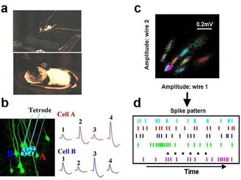

Research
|
|
|
||||||||||
|
|
Introduction “Memory is deceptive because it is colored by today’s events.” – Albert Einstein. “Seeing is believing.” – English proverb. These quotes reflect an interesting mutual influence between what we learn (memory) and what we see (perception). Memories may be modified by current sensory input, and perceptions are biased by memories. The long-term goal of our research is to understand how sensory information is integrated into memory traces and how memories in turn shape other brain functions, such as perception, decision making, emotion, and even personality. All these complex behaviors are largely mediated and generated by neurons, the primary cell types of the brain. Unlike other major cell types in the body, neurons are connected to form complex circuits (systems) and communicate constantly using action potentials (spikes) as coding signals. It is these circuits, like computer electronic circuits, that compute incoming sensory inputs, form and store memories, and generate responses. To understand the sensory-memory interaction in rats and mice, we use several techniques to study the dialogue between cells and circuits in the visual cortex, an area critical for visual perception, and the hippocampus, a memory processing center. Research Topics Learning-dependent
correlation of visual cortical and hippocampal cell responses First, we examine how the cells in the visual cortex and hippocampus respond to learning and environmental manipulations and how the responses in the two areas are correlated. This is studied primarily by using the tetrode recording technique, which can simultaneously monitor spike patterns of a large number of cells in multiple brain areas in freely behaving animals (Figure below). The technique makes it possible to look through the “mind” of an animal during problem solving and memory formation.  Large-scale
simultaneous recording of multiple cells in
vivo. (a) Rat with a
“hat”, a device that sends 18 tetrodes to the brain while the
animal was running and sleeping. (b)
Tetrode with a group of neurons inside the rat brain. Tetrode consists of 4
wires, each of which records spikes of its neighboring neurons. Since cells
are located with different relative distances to the wires, a tetrode can
differentiate the cells one from another. In this case, since cell A is
closer to wire # 4 and 2, a spike from A (red)
results in a larger signal at these two wires. In contrast, a spike from cell
B (blue) results in a larger signal
at wire #3 and 1. (c) A plot to
show all the spikes recorded during a 2 hour session by a single tetrode.
Each cluster of dots represents all the spikes from a single neuron. Here
totally 10 cells are recorded. (d)
Spikes from single cells are displayed against time to show spike pattern of
the population. Each tick here represents a spike and each row represents a
cell. Such a spike pattern forms a record of brain activity. Analysis can
then be done to understand how spike patterns encode memory and how they
evolve with time. Recently we have found that memory traces are replayed during sleep not only in the hippocampus, but also in the visual cortex, which offers an important support to the consolidation theory that, during sleep, the hippocampus sends memory traces back to the cortex for long-term storage. Using the same technique, we also examined how the hippocampal activity patterns evolve during the formation of memory traces for novel running trajectories in rats. We will continue this line of research by focusing the interactions between cells in the visual cortex and hippocampus during memory tasks and sleep. Feed forward vs.
feed back circuits involved in the cortical-hippocampal interactions In the rat visual cortex, the bottom-up flow of information starts from the primary visual cortex (V1), to the secondary visual cortex (V2), temporal associational cortex (TeA), perirhinal cortex, entorhinal cortex, and finally reaches the hippocampus. Interestingly, all these neighboring areas in the pathway are anatomically connected not just by forward, but also backward projections, which may mediate a top-down flow of information from the hippocampus back to the visual cortical areas. To gain a more detailed understanding of the underlying mechanisms for the mutual sensory-memory interactions, we study the feed forward and feed back circuits between the visual cortex and hippocampus in brain slices of rats and mice. An area of focus is temporal area A (TeA), which interfaces between the rat visual and memory systems. The recently developed photo-activating channel rhodopsin system makes it possible to study long range connections between different brain areas. Abnormal
cortical-hippocampal interactions in neurological diseases Abnormal sensory-memory interactions may be involved in a number of neurological and psychiatric disorders. For example, hallucinations and dementia often occur together in patients with Alzheimer’s, Parkinson’s, or post traumatic syndrome disorder (PTSD). We utilize rodent models of these disorders, transgenic or pharmacological, to study how manipulations in either of the visual cortex or hippocampus could influence the function of the other. Representation of
memory traces in spike patterns Finally, computational approaches are applied to decode the underlying functional structures of spike patterns in normal or abnormal brain areas.
|
|||||||||